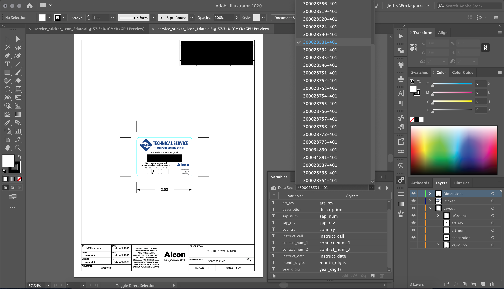

Service Label
Jeff Naemura / April 2020
Summary
The following screenshot shows the Adobe Illustrator source file I created to batch output labels with localized text. The labels were placed on medical devices to remind owners to contact them for preventive maintenance or battery replacements. Overall, there were over 100 labels that needed to be created and released simultaneously. The labels are not available to general consumers, so the screenshot only demonstrates the use of variables and a data set to automate the building of over 100 labels at a time.
Responsibilities
My responsibilities were to design the labels based on requirements from global affiliates, create templates, and generate release copies of all localized labels for the product lifecycle management system.
To expedite the process, I created an XML file to store localized information and aligned tags with variables in Illustrator. Then, I made an Illustrator action to batch output all labels automatically.
Translations and localization were done by global affiliates. Printed material and vendor choices were made by technical services engineer.
Target Audience
- Field service engineers
- Equipment owners
Tools
- Adobe Illustrator
- Adobe Dreamweaver
Sample
 XML data set of localized content that matches Illustrator variables